vs Manim¶
This page compares VectorMation with Manim Community side by side. Each example is taken from the Manim examples gallery. All VectorMation examples are runnable from examples/manim/.
Key Differences¶
VectorMation |
Manim |
|
|---|---|---|
Output |
Native SVG |
Rasterized video (Cairo/OpenGL) |
Approach |
Declarative: define animations, view any frame |
Imperative: |
Structure |
Plain script |
Class with |
Preview |
Hot-reload browser viewer |
Re-render on every change |
Angles |
Degrees |
Radians ( |
Timing |
Seconds as floats ( |
|
Coordinates |
Pixel-based (1920x1080 viewBox, center at 960, 540) |
Unit-based (centered at ORIGIN) |
Philosophy¶
Manim treats animation as a sequence of actions: create a shape, play an animation, wait, play another. Every step is explicitly played through self.play().
VectorMation treats objects as functions of time: you define what should happen and when, and the library renders any frame on demand. This means no self.play() calls, no self.wait(), and instant hot-reload in the browser.
Basic Concepts¶
Example: ManimCELogo
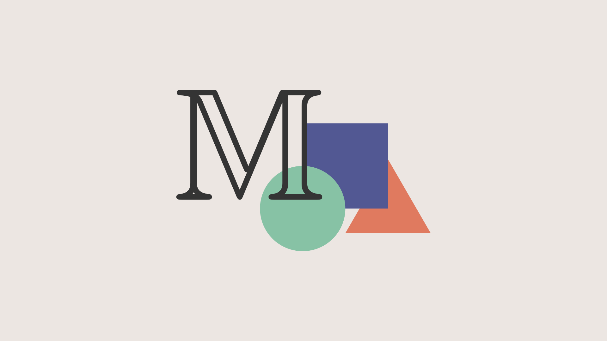
Logo recreation with basic shapes.
"""Manim equivalent: ManimCELogo -- community edition logo with shapes and M."""
from vectormation.objects import *
# Initialize the animation frame
canvas = VectorMathAnim()
canvas.set_background(fill='#ece6e2')
# 1 manim unit = 135px
unit = 135
# Shapes at manim default sizes (radius=1u, side=2u), centered at screen center
cir = Circle(unit, fill='#87c2a5', stroke_width=0, fill_opacity=1).shift(dx=-unit)
sq = Rectangle(2 * unit, 2 * unit, fill='#525893', stroke_width=0, fill_opacity=1).center_to_pos().shift(dy=-unit)
tr = EquilateralTriangle(2 * unit, fill='#e07a5f', stroke_width=0, fill_opacity=1).shift(dx=unit)
# M character: Manim uses MathTex("\mathbb{M}").scale(7), shifted 2.25*LEFT + 1.5*UP
char = TexObject(r'$$\mathbb{M}$$', font_size=350, fill='#343434').objects[0]
char.center_to_pos()
char.shift(dx=round(-2.25 * unit), dy=round(-1.5 * unit))
# Group and center (order matters for z-layering: triangle, square, circle, M)
logo = VCollection(tr, sq, cir, char)
logo.center_to_pos()
canvas.add_objects(logo)
canvas.show()
class ManimCELogo(Scene):
def construct(self):
self.camera.background_color = "#ece6e2"
ds_m = MathTex(r"\mathbb{M}", fill_color="#343434").scale(7)
ds_m.shift(2.25 * LEFT + 1.5 * UP)
circle = Circle(color="#87c2a5", fill_opacity=1).shift(LEFT)
square = Square(color="#525893", fill_opacity=1).shift(UP)
triangle = Triangle(color="#e07a5f", fill_opacity=1).shift(RIGHT)
logo = VGroup(triangle, square, circle, ds_m)
logo.move_to(ORIGIN)
self.add(logo)
Example: BraceAnnotation
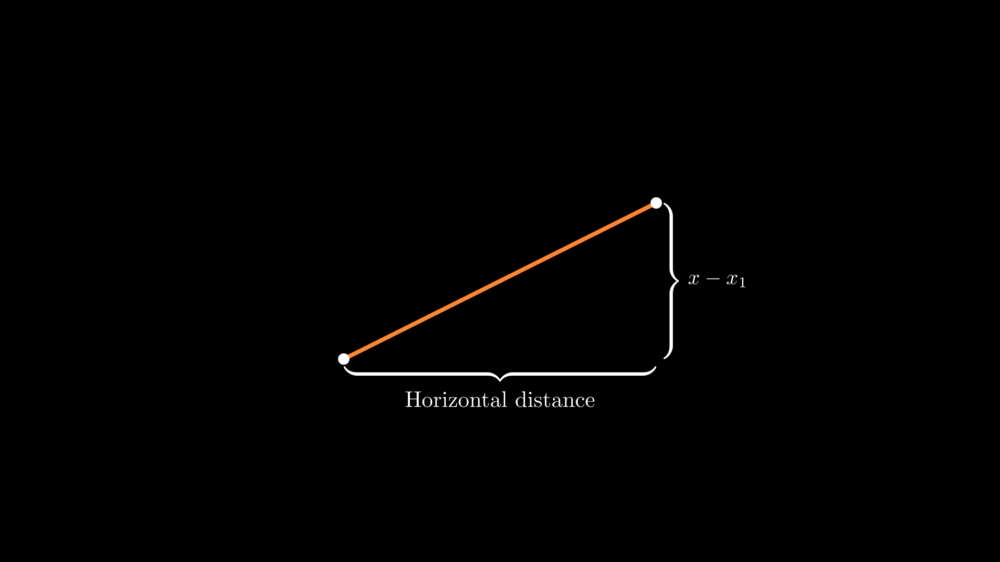
A line with curly brace annotations.
"""Manim equivalent: BraceAnnotation -- brace with text label."""
from vectormation.objects import *
canvas = VectorMathAnim()
canvas.set_background()
# Manim: dot at [-2,-1] and [2,1] => centered on canvas
dot1 = Dot(cx=660, cy=690, fill='#fff', fill_opacity=1)
dot2 = Dot(cx=1260, cy=390, fill='#fff', fill_opacity=1)
line = Line(x1=660, y1=690, x2=1260, y2=390, stroke='#FF862F', stroke_width=8)
b1 = Brace(line, direction='down', label='Horizontal distance')
b2 = Brace(line, direction='right', label=r'$x-x_1$')
canvas.add_objects(line, dot1, dot2, b1, b2)
canvas.show()
class BraceAnnotation(Scene):
def construct(self):
dot = Dot([-2, -1, 0])
dot2 = Dot([2, 1, 0])
line = Line(dot.get_center(), dot2.get_center()).set_color(ORANGE)
b1 = Brace(line)
b1text = b1.get_text("Horizontal distance")
b2 = Brace(line, direction=line.copy().rotate(PI / 2).get_unit_vector())
b2text = b2.get_tex("x-x_1")
self.add(line, dot, dot2, b1, b2, b1text, b2text)
Example: VectorArrow
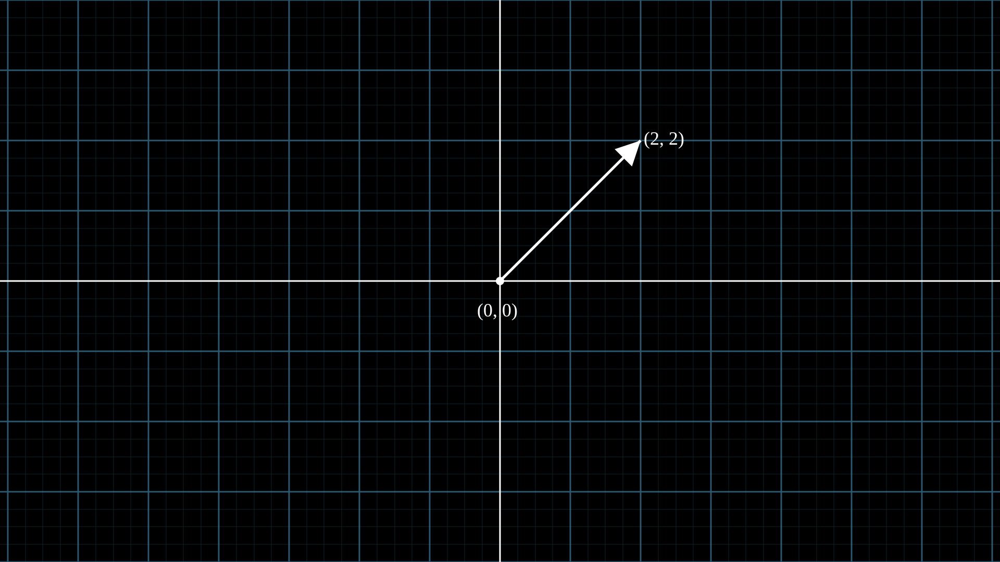
An arrow on a number plane with labels.
"""Manim equivalent: VectorArrow -- arrow with labeled endpoints on a grid."""
from vectormation.objects import *
canvas = VectorMathAnim()
canvas.set_background()
plane = NumberPlane()
# Arrow from origin (0,0) to (2,2) in logical coordinates
ox, oy = plane.coords_to_point(0, 0)
tx, ty = plane.coords_to_point(2, 2)
origin = Dot(cx=ox, cy=oy, r=8, fill='#fff', fill_opacity=1)
arrow = Arrow(x1=ox, y1=oy, x2=tx, y2=ty, stroke='#FFFFFF')
origin_text = Text('(0, 0)', font_size=36)
origin_text.center_to_pos(posx=ox, posy=oy + 50)
tip_text = Text('(2, 2)', font_size=36)
tip_text.center_to_pos(posx=tx + 50, posy=ty - 10)
canvas.add_objects(plane, origin, arrow, origin_text, tip_text)
canvas.show()
class VectorArrow(Scene):
def construct(self):
dot = Dot(ORIGIN)
arrow = Arrow(ORIGIN, [2, 2, 0], buff=0)
numberplane = NumberPlane()
origin_text = Text('(0, 0)').next_to(dot, DOWN)
tip_text = Text('(2, 2)').next_to(arrow.get_end(), RIGHT)
self.add(numberplane, dot, arrow, origin_text, tip_text)
Animations¶
Example: PointMovingOnShapes
A dot moves along a circle and then rotates around a point.
"""Manim equivalent: PointMovingOnShapes -- dot moving along and around shapes."""
from vectormation.objects import *
canvas = VectorMathAnim()
canvas.set_background()
cir = Circle(0, cx=960, cy=540, stroke='blue', fill_opacity=0)
cir.r.move_to(0, 1, 150)
dot = Dot(r=12, fill='#fff', fill_opacity=1)
dot.c.move_to(1, 2, (1110, 540))
dot.c.rotate_around(2, 4, (960, 540), 360)
dot.c.rotate_around(4, 5.5, (1260, 540), 360)
l = Line(960 + 3 * 150, 540, 960 + 5 * 150, 540)
canvas.add_objects(cir, dot, l)
canvas.show()
class PointMovingOnShapes(Scene):
def construct(self):
circle = Circle(radius=1, color=BLUE)
dot = Dot()
dot2 = dot.copy().shift(RIGHT)
self.add(dot)
line = Line([3, 0, 0], [5, 0, 0])
self.add(line)
self.play(GrowFromCenter(circle))
self.play(Transform(dot, dot2))
self.play(MoveAlongPath(dot, circle), run_time=2, rate_func=linear)
self.play(Rotating(dot, about_point=[2, 0, 0]), run_time=1.5)
Example: MovingAround
A square shifts, changes colour, scales, and rotates.
"""Manim equivalent: MovingAround -- chain of shift, set_fill, scale, rotate."""
from vectormation.objects import *
canvas = VectorMathAnim()
canvas.set_background()
square = Rectangle(200, 200, fill='#58C4DD', fill_opacity=1)
square.center_to_pos(posx=960, posy=540)
square.shift(dx=-200, start=0, end=1)
square.set_color(1, 2, '#FF862F')
square.scale(0.3, 2, 3)
square.rotate_by(3, 4, 23)
canvas.add_objects(square)
canvas.show()
class MovingAround(Scene):
def construct(self):
square = Square(color=BLUE, fill_opacity=1)
self.play(square.animate.shift(LEFT))
self.play(square.animate.set_fill(ORANGE))
self.play(square.animate.scale(0.3))
self.play(square.animate.rotate(0.4))
Example: MovingAngle
An angle indicator tracks a rotating line.
"""Manim equivalent: MovingAngle -- angle arc between two lines, animated via updater."""
from vectormation.objects import *
canvas = VectorMathAnim()
canvas.set_background()
cx, cy = 960, 540
l1 = Line(x1=cx, y1=cy, x2=cx + 200, y2=cy, stroke='#fff')
l2 = Line(x1=cx, y1=cy, x2=cx + 200, y2=cy, stroke='#FFFF00')
l2.p2.rotate_around(0, 2, (cx, cy), degrees=-110)
l2.p2.rotate_around(2, 3.5, (cx, cy), degrees=70)
l2.p2.rotate_around(3.5, 5, (cx, cy), degrees=-140)
angle = Angle(vertex=l1.p1, p1=l1.p2, p2=l2.p2, radius=40,
label=r'$\theta$', label_font_size=36)
canvas.add_objects(l1, l2, angle)
canvas.show()
class MovingAngle(Scene):
def construct(self):
rotation_center = LEFT
theta_tracker = ValueTracker(110)
line1 = Line(LEFT, RIGHT)
line_moving = Line(LEFT, RIGHT)
line_ref = line_moving.copy()
line_moving.rotate(
theta_tracker.get_value() * DEGREES, about_point=rotation_center
)
a = Angle(line1, line_moving, radius=0.5, other_angle=False)
tex = MathTex(r"\theta").move_to(
Angle(line1, line_moving, radius=0.5 + 3 * SMALL_BUFF,
other_angle=False).point_from_proportion(0.5)
)
self.add(line1, line_moving, a, tex)
line_moving.add_updater(
lambda x: x.become(line_ref.copy()).rotate(
theta_tracker.get_value() * DEGREES, about_point=rotation_center
)
)
a.add_updater(
lambda x: x.become(Angle(line1, line_moving, radius=0.5))
)
self.play(theta_tracker.animate.set_value(40))
self.play(theta_tracker.animate.increment_value(140))
self.play(theta_tracker.animate.set_value(350))
Example: MovingDots
Two dots move independently with a line tracking between them.
"""Manim equivalent: MovingDots -- two dots linked by a line, each moving independently."""
from vectormation.objects import *
canvas = VectorMathAnim()
canvas.set_background()
d1, d2 = Dot(r=12, fill='#58C4DD', fill_opacity=1), Dot(r=12, fill='#83C167', fill_opacity=1)
l = Line(x1=960, y1=540, x2=860, y2=540, stroke='#FC6255')
d1.c.set_to(l.p1)
d2.c.set_to(l.p2)
l.p1.move_to(1.5, 3, (960, 240))
l.p2.move_to(1, 2.5, (1260, 540))
canvas.add_objects(l, d1, d2)
canvas.show()
class MovingDots(Scene):
def construct(self):
d1, d2 = Dot(color=BLUE), Dot(color=GREEN)
dg = VGroup(d1, d2).arrange(RIGHT, buff=1)
l1 = Line(d1.get_center(), d2.get_center()).set_color(RED)
x = ValueTracker(0)
y = ValueTracker(0)
d1.add_updater(lambda z: z.set_x(x.get_value()))
d2.add_updater(lambda z: z.set_y(y.get_value()))
l1.add_updater(lambda z: z.become(Line(d1.get_center(), d2.get_center())))
self.add(d1, d2, l1)
self.play(x.animate.set_value(5))
self.play(y.animate.set_value(4))
Example: MovingGroupToDestination
A group of dots shifts so that the red dot lands on the yellow dot.
"""Manim equivalent: MovingGroupToDestination -- move a group to align with a target."""
from vectormation.objects import *
canvas = VectorMathAnim()
canvas.set_background()
d1 = Dot(cx=660, cy=540)
d2 = Dot(cx=760, cy=540)
d3 = Dot(cx=860, cy=540, fill='#FC6255')
d4 = Dot(cx=960, cy=540)
group = VCollection(d1, d2, d3, d4)
dest = Dot(cx=1200, cy=300, fill='#FFFF00')
# Shift the group so d3 (the red dot) ends up at dest
target_x, target_y = 1200, 300
ref_x, ref_y = d3.c.at_time(0)
group.shift(dx=target_x - ref_x, dy=target_y - ref_y, start=0.5, end=2)
canvas.add_objects(group, dest)
canvas.show()
class MovingGroupToDestination(Scene):
def construct(self):
group = VGroup(Dot(LEFT), Dot(ORIGIN), Dot(RIGHT, color=RED), Dot(2 * RIGHT)).scale(1.4)
dest = Dot([4, 3, 0], color=YELLOW)
self.add(group, dest)
self.play(group.animate.shift(dest.get_center() - group[2].get_center()))
Example: MovingFrameBox
A surrounding rectangle highlights parts of an equation.
"""Manim equivalent: MovingFrameBox -- LaTeX with animated bounding rectangles."""
from vectormation.objects import *
canvas = VectorMathAnim(width=1920, height=540)
canvas.set_background()
text = TexObject(r'$$\frac{d}{dx}f(x)g(x)=f(x)\frac{d}{dx}g(x)+g(x)\frac{d}{dx}f(x)$$', font_size=120)
text.center_to_pos(posx=960, posy=270)
text.write(0, 1)
rect1 = text.brect(0, 13, 25, follow=False, buff=12)
rect2 = text.brect(0, 26, 38, follow=False, buff=12)
obj = MorphObject(rect1, rect2, start=2, end=4)
canvas.add_objects(text, obj, rect1, rect2)
canvas.show()
class MovingFrameBox(Scene):
def construct(self):
text = MathTex(
r"\frac{d}{dx}f(x)g(x)=", r"f(x)\frac{d}{dx}g(x)", "+",
r"g(x)\frac{d}{dx}f(x)"
)
self.play(Write(text))
framebox1 = SurroundingRectangle(text[1], buff=.1)
framebox2 = SurroundingRectangle(text[3], buff=.1)
self.play(Create(framebox1))
self.play(ReplacementTransform(framebox1, framebox2))
Example: RotationUpdater
A line rotates forward, then reverses direction.
"""Manim equivalent: RotationUpdater -- line rotating forward and backward."""
from vectormation.objects import *
canvas = VectorMathAnim()
canvas.set_background()
l1 = Line(x1=760, y1=540, x2=960, y2=540)
l2 = Line(x1=760, y1=540, x2=960, y2=540, stroke=(255, 0, 0))
l2.p1.rotate_around(1, 3, l2.p2.at_time(0), degrees=130)
l2.p1.rotate_around(3, 5, l2.p2.at_time(0), degrees=130, clockwise=True)
canvas.add_objects(l1, l2)
canvas.show()
class RotationUpdater(Scene):
def construct(self):
def updater_forth(mobj, dt):
mobj.rotate_about_origin(dt)
def updater_back(mobj, dt):
mobj.rotate_about_origin(-dt)
line_reference = Line(ORIGIN, LEFT).set_color(WHITE)
line_moving = Line(ORIGIN, LEFT).set_color(YELLOW)
line_moving.add_updater(updater_forth)
self.add(line_reference, line_moving)
self.wait(2)
line_moving.remove_updater(updater_forth)
line_moving.add_updater(updater_back)
self.wait(2)
Example: PointWithTrace
A dot moves along a path leaving a visible trace behind it.
"""Manim equivalent: PointWithTrace -- dot leaves a traced path as it moves."""
from vectormation.objects import *
canvas = VectorMathAnim()
canvas.set_background()
point = Dot(cx=960, cy=540)
point.c.rotate_around(1, 2, (1060, 540), 180, clockwise=True)
point.c.move_to(2.5, 3.5, (1160, 440))
point.c.move_to(4, 5, (1060, 440))
trace = Trace(point.c, start=0, end=5, dt=1/60)
canvas.add_objects(trace, point)
canvas.show()
class PointWithTrace(Scene):
def construct(self):
path = VMobject()
dot = Dot()
path.set_points_as_corners([dot.get_center(), dot.get_center()])
def update_path(path):
previous_path = path.copy()
previous_path.add_points_as_corners([dot.get_center()])
path.become(previous_path)
path.add_updater(update_path)
self.add(path, dot)
self.play(Rotating(dot, angle=PI, about_point=RIGHT, run_time=2))
self.play(dot.animate.shift(UP))
self.play(dot.animate.shift(LEFT))
Example: SineCurveUnitCircle
A dot moves around a unit circle, tracing out a sine curve.
"""Manim equivalent: SineCurveUnitCircle -- sine wave traced from a unit circle."""
from vectormation.objects import *
import math
canvas = VectorMathAnim()
canvas.set_background()
ax = Axes(x_range=(-3, 14), y_range=(-1.5, 1.5), equal_aspect=True, x_tick_type='pi_tex')
c2p = ax.coords_to_point
RATE, DURATION = 0.5, 4
angle = lambda t: 2 * math.pi * RATE * t
cx, cy = c2p(-1, 0)
unit_px = c2p(1, 0)[0] - c2p(0, 0)[0]
# Sine curve growing from x=0
curve = ax.plot(math.sin, x_range=(0, 0), stroke='#FCE94F')
curve._domain_max.set_onward(0, angle)
# Unit circle at (-1, 0)
circle = Circle(r=unit_px, cx=cx, cy=cy, stroke='red', stroke_width=2, fill_opacity=0)
# Orbiting dot + sine-tracking dot
dot = Dot(fill='#FFFF00')
dot.c.set_onward(0, lambda t: c2p(-1 + math.cos(angle(t)), math.sin(angle(t))))
curve_dot = Dot(fill='#FFFF00', r=5)
curve_dot.c.set_onward(0, lambda t: c2p(angle(t), math.sin(angle(t))))
# Radius line and horizontal connector
radius_line = Line(x1=cx, y1=cy, stroke='#58C4DD', stroke_width=2)
radius_line.p2.set_onward(0, lambda t: dot.c.at_time(t))
h_line = Line(stroke='#FFFF00', stroke_width=2, opacity=0.6)
h_line.p1.set_onward(0, lambda t: dot.c.at_time(t))
h_line.p2.set_onward(0, lambda t: curve_dot.c.at_time(t))
canvas.add_objects(ax, circle, radius_line, h_line, dot, curve_dot)
canvas.show(end=DURATION)
class SineCurveUnitCircle(Scene):
# Full source: ~60 lines across show_axis(), show_circle(),
# move_dot_and_draw_curve() with dt-based updaters and
# always_redraw() for the radius line, connecting line, and curve.
def construct(self):
self.show_axis()
self.show_circle()
self.move_dot_and_draw_curve()
self.wait()
Plotting¶
Example: SinAndCosFunctionPlot
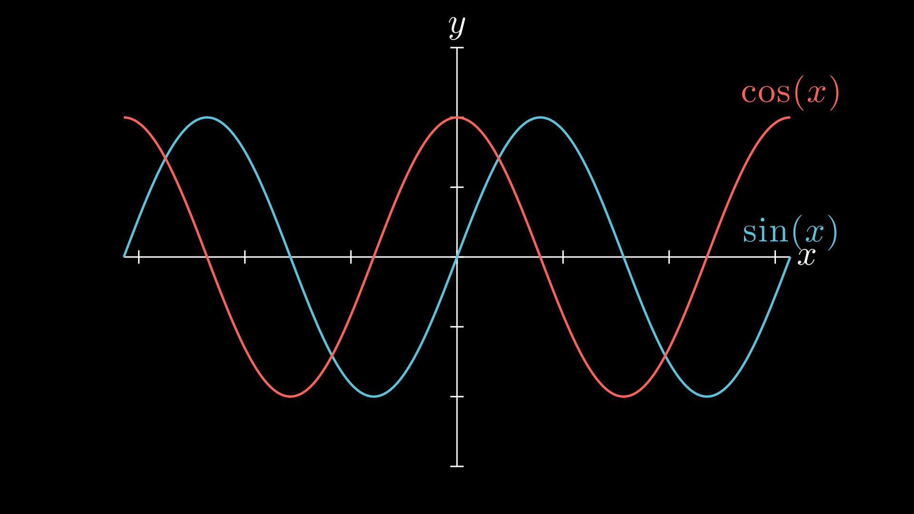
Sine and cosine curves on shared axes.
"""Manim equivalent: SinAndCosFunctionPlot -- sin and cos on axes."""
from vectormation.objects import *
import math
canvas = VectorMathAnim()
canvas.set_background()
axes = Axes(x_range=(-2 * math.pi, 2 * math.pi), y_range=(-1.5, 1.5),
x_label='x', y_label='y')
axes.add_function(math.sin, label=r'$\sin(x)$', stroke='#58C4DD')
axes.add_function(math.cos, label=r'$\cos(x)$', stroke='#FC6255')
canvas.add_objects(axes)
canvas.show()
class SinAndCosFunctionPlot(Scene):
def construct(self):
axes = Axes(
x_range=[-10, 10.3, 1], y_range=[-1.5, 1.5, 1],
x_length=10, axis_config={"color": GREEN},
x_axis_config={"numbers_to_include": np.arange(-10, 10.01, 2)},
tips=False,
)
sin_graph = axes.plot(lambda x: np.sin(x), color=BLUE)
cos_graph = axes.plot(lambda x: np.cos(x), color=RED)
sin_label = axes.get_graph_label(sin_graph, r"\sin(x)", x_val=-10)
cos_label = axes.get_graph_label(cos_graph, label=r"\cos(x)")
self.add(axes, sin_graph, cos_graph, sin_label, cos_label)
Example: ArgMinExample
A dot slides along a parabola to its minimum.
"""Manim equivalent: ArgMinExample -- dot moving along a parabola to its minimum."""
from vectormation.objects import *
from vectormation import easings, attributes
canvas = VectorMathAnim()
canvas.set_background()
ax = Axes(x_range=(0, 10), y_range=(0, 55), tex_ticks=True)
func = lambda x: 2 * (x - 5) ** 2
curve = ax.plot(func, stroke='#C55F73')
# Dot that travels along the curve to the minimum using graph_position
dot = Dot(fill='#FFFF00')
x_val = attributes.Real(0, 0)
x_val.move_to(0, 3, 5, easing=easings.smooth)
dot.c.set_onward(0, ax.graph_position(func, x_val))
canvas.add_objects(ax, dot)
canvas.show(end=3)
class ArgMinExample(Scene):
def construct(self):
ax = Axes(x_range=[0, 10], y_range=[0, 100, 10],
axis_config={"include_tip": False})
t = ValueTracker(0)
def func(x):
return 2 * (x - 5) ** 2
graph = ax.plot(func, color=MAROON)
initial_point = [ax.coords_to_point(t.get_value(), func(t.get_value()))]
dot = Dot(point=initial_point)
dot.add_updater(
lambda x: x.move_to(ax.c2p(t.get_value(), func(t.get_value())))
)
x_space = np.linspace(*ax.x_range[:2], 200)
minimum_index = func(x_space).argmin()
self.add(ax, graph, dot)
self.play(t.animate.set_value(x_space[minimum_index]))
Example: GraphAreaPlot
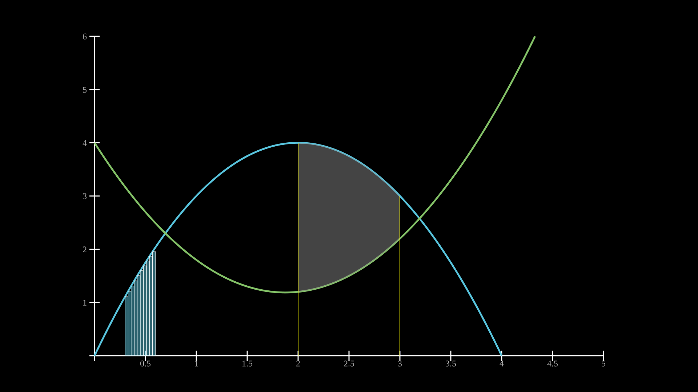
Shaded areas, vertical lines, and Riemann rectangles on a plot.
"""Manim equivalent: GraphAreaPlot -- two curves with Riemann rects and area between curves."""
from vectormation.objects import *
canvas = VectorMathAnim()
canvas.set_background()
ax = Axes(x_range=(0, 5), y_range=(0, 6))
f1 = lambda x: 4 * x - x ** 2
f2 = lambda x: 0.8 * x ** 2 - 3 * x + 4
curve1 = ax.plot(f1, stroke='#58C4DD')
curve2 = ax.plot(f2, stroke='#83C167')
# Riemann rectangles under curve1 in x=[0.3, 0.6]
riemann = ax.get_riemann_rectangles(f1, x_range=(0.3, 0.6), dx=0.03,
fill='#58C4DD', fill_opacity=0.5)
# Shaded area between curve2 and curve1 in x=[2, 3]
area = ax.get_area(curve2, x_range=(2, 3), bounded_graph=curve1,
fill='#888888', fill_opacity=0.5)
# Vertical reference lines at x=2 and x=3
vline1 = ax.get_vertical_line(2, y_val=f1(2))
vline2 = ax.get_vertical_line(3, y_val=f1(3))
canvas.add_objects(ax)
canvas.show()
class GraphAreaPlot(Scene):
def construct(self):
ax = Axes(x_range=[0, 5], y_range=[0, 6],
x_axis_config={"numbers_to_include": [2, 3]}, tips=False)
curve_1 = ax.plot(lambda x: 4 * x - x ** 2, x_range=[0, 4], color=BLUE_C)
curve_2 = ax.plot(
lambda x: 0.8 * x ** 2 - 3 * x + 4, x_range=[0, 4], color=GREEN_B
)
line_1 = ax.get_vertical_line(ax.input_to_graph_point(2, curve_1), color=YELLOW)
line_2 = ax.get_vertical_line(ax.i2gp(3, curve_1), color=YELLOW)
riemann_area = ax.get_riemann_rectangles(
curve_1, x_range=[0.3, 0.6], dx=0.03, color=BLUE, fill_opacity=0.5
)
area = ax.get_area(curve_2, [2, 3], bounded_graph=curve_1, color=GREY, opacity=0.5)
self.add(ax, curve_1, curve_2, line_1, line_2, riemann_area, area)
Example: PolygonOnAxes
A rectangle’s area tracks along a hyperbola as the width changes.
"""Manim equivalent: PolygonOnAxes -- dynamic rectangle under a 1/x curve."""
from vectormation.objects import *
from vectormation import attributes
canvas = VectorMathAnim()
canvas.set_background()
ax = Axes(x_range=(0, 10), y_range=(0, 10), tex_ticks=True)
f = lambda x: 25 / x if x > 0.1 else 100
curve = ax.plot(f, stroke='yellow')
# Animated t from 5 -> 9 -> 2.5 -> 5
t_attr = attributes.Real(0, 5)
t_attr.move_to(0, 2, 9)
t_attr.move_to(2, 4, 2.5)
t_attr.move_to(4, 6, 5)
rect = ax.get_rect(0, 0, t_attr, t_attr.apply(f),
fill='blue', fill_opacity=0.4, stroke='yellow')
dot = Dot(fill='#fff')
dot.c.set_onward(0, ax.graph_position(f, t_attr))
# Also add final morphing because we can
star = Star(outer_radius=100, fill='green')
circle = Cross(200)
rect2 = Rectangle(200, 200, fill='green')
coll = VCollection(star, circle, rect2).arrange_in_grid(1, 3, buff=100).center_to_pos()
coll.spin(7, 8)
morph = MorphObject(rect, star, 6, 7)
morph2 = MorphObject(curve, circle, 6, 7)
morph3 = MorphObject(ax.axes, rect2, 6, 7)
dot.fadeout(6, 7)
canvas.add_objects(ax, dot)
canvas.add_objects(morph, morph2, morph3, coll)
canvas.show()
class PolygonOnAxes(Scene):
def construct(self):
ax = Axes(x_range=[0, 10], y_range=[0, 10], x_length=6, y_length=6,
axis_config={"include_tip": False})
t = ValueTracker(5)
k = 25
graph = ax.plot(lambda x: k / x, color=YELLOW_D,
x_range=[k / 10, 10.0, 0.01], use_smoothing=False)
def get_rectangle():
polygon = Polygon(*[ax.c2p(*i) for i in
[(t.get_value(), k / t.get_value()), (0, k / t.get_value()),
(0, 0), (t.get_value(), 0)]])
polygon.set_fill(BLUE, opacity=0.5).set_stroke(YELLOW_B)
return polygon
polygon = always_redraw(get_rectangle)
dot = Dot()
dot.add_updater(lambda x: x.move_to(ax.c2p(t.get_value(), k / t.get_value())))
self.add(ax, graph, dot)
self.play(Create(polygon))
self.play(t.animate.set_value(10))
self.play(t.animate.set_value(k / 10))
self.play(t.animate.set_value(5))
Example: HeatDiagramPlot
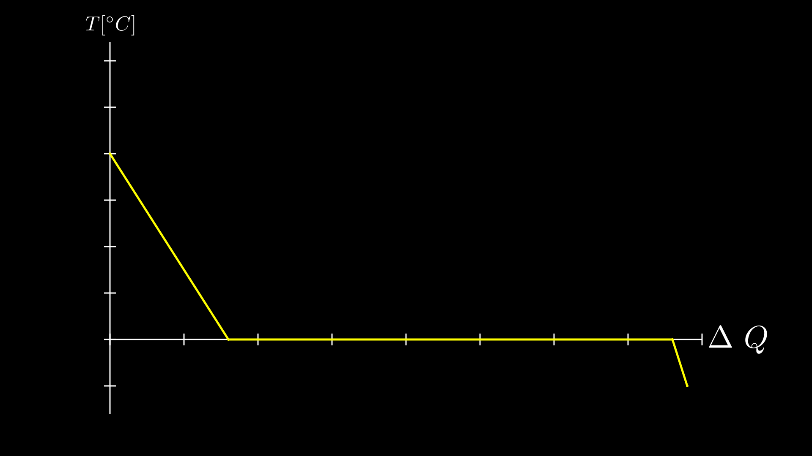
A line graph plotting temperature against heat with axis labels.
"""Manim equivalent: HeatDiagramPlot -- line graph from discrete data points."""
from vectormation.objects import *
canvas = VectorMathAnim()
canvas.set_background()
ax = Axes(x_range=(0, 40), y_range=(-8, 32),
x_label=r'$\Delta Q$', y_label=r'$T[^\circ C]$')
x_vals = [0, 8, 38, 39]
y_vals = [20, 0, 0, -5]
graph = ax.plot_line_graph(x_vals, y_vals, stroke='#FFFF00')
canvas.add_objects(ax)
canvas.show()
class HeatDiagramPlot(Scene):
def construct(self):
ax = Axes(
x_range=[0, 40, 5], y_range=[-8, 32, 5], x_length=9, y_length=6,
x_axis_config={"numbers_to_include": np.arange(0, 40, 5)},
y_axis_config={"numbers_to_include": np.arange(-5, 34, 5)},
tips=False,
)
labels = ax.get_axis_labels(
x_label=Tex(r"$\Delta Q$"), y_label=Tex(r"T[$^\circ C$]")
)
x_vals = [0, 8, 38, 39]
y_vals = [20, 0, 0, -5]
graph = ax.plot_line_graph(x_values=x_vals, y_values=y_vals)
self.add(ax, labels, graph)
Advanced¶
Example: GradientImageFromArray
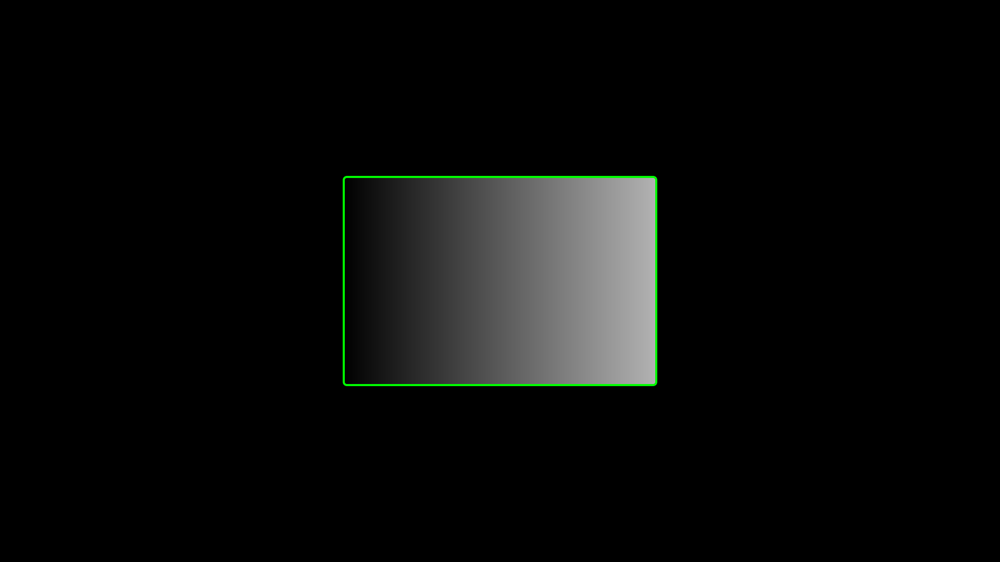
A black-to-white linear gradient with a green bounding rectangle.
"""Manim equivalent: GradientImageFromArray -- linear gradient with bounding rectangle."""
from vectormation.objects import *
from vectormation.colors import LinearGradient
canvas = VectorMathAnim()
canvas.set_background()
# Black-to-white linear gradient
grad = LinearGradient([('0%', '#000'), ('100%', '#fff')])
canvas.add_gradient(grad)
# Gradient rectangle centered on screen
rect = Rectangle(width=600, height=400, x=660, y=340, fill=grad, stroke_width=0)
# Green bounding rectangle
border = SurroundingRectangle(rect, buff=0, stroke='#00FF00', stroke_width=4,
fill_opacity=0)
canvas.add_objects(rect, border)
canvas.show()
class GradientImageFromArray(Scene):
def construct(self):
n = 256
imageArray = np.uint8(
[[i * 256 / n for i in range(0, n)] for _ in range(0, n)]
)
image = ImageMobject(imageArray).scale(2)
image.background_rectangle = SurroundingRectangle(image, GREEN)
self.add(image, image.background_rectangle)
Example: BooleanOperations
Boolean operations (intersection, union, exclusion, difference) on two overlapping ellipses.
"""Manim equivalent: BooleanOperations -- boolean ops on overlapping ellipses."""
from vectormation import *
canvas = VectorMathAnim()
canvas.set_background(fill='#1a1a2e')
ellipse1 = Ellipse(rx=270, ry=338, cx=825, cy=540,
fill=BLUE, fill_opacity=0.5, stroke=BLUE, stroke_width=10)
ellipse2 = Ellipse(rx=270, ry=338, cx=1095, cy=540,
fill=RED, fill_opacity=0.5, stroke=RED, stroke_width=10)
title = Text('Boolean Operations', x=960, y=120, font_size=72, fill='#fff',
stroke_width=0, text_anchor='middle')
canvas.add_objects(ellipse1, ellipse2, title)
ellipse1.fadein(start=0, end=0.5)
ellipse2.fadein(start=0, end=0.5)
title.fadein(start=0, end=0.5)
# Each boolean op: appears at ellipse overlap, then scales down and moves under its label.
# Staggered like Manim: one at a time, label fades in after move.
ops = [
('Intersection', Intersection, GREEN, 1600, 250),
('Union', Union, ORANGE, 1600, 700),
('Exclusion', Exclusion, YELLOW, 300, 250),
('Difference', Difference, PINK, 300, 700),
]
t = 1.0
for name, cls, color, tx, ty in ops:
op = cls(ellipse1, ellipse2, fill=color, fill_opacity=0.5, creation=t, stroke_width=10)
canvas.add_objects(op)
op.scale(0.4, start=t + 0.5, end=t + 1.3)
op.center_to_pos(posx=tx, posy=ty + 100, start=t + 0.5, end=t + 1.3)
label = Text(name, x=tx, y=ty - 70, font_size=48, fill='#ddd',
stroke_width=0, text_anchor='middle')
canvas.add_objects(label)
label.fadein(start=t, end=t + 0.5)
t += 1.5
canvas.show(end=t + 0.5)
class BooleanOperations(Scene):
def construct(self):
ellipse1 = Ellipse(
width=4.0, height=5.0, fill_opacity=0.5, color=BLUE, stroke_width=10
).move_to(LEFT)
ellipse2 = Ellipse(
width=4.0, height=5.0, fill_opacity=0.5, color=RED, stroke_width=10
).move_to(RIGHT)
bool_ops_text = MarkupText("<u>Boolean Operation</u>").next_to(ellipse1, UP * 3)
ellipse_group = Group(ellipse1, ellipse2)
self.play(FadeIn(ellipse_group))
i = Intersection(ellipse1, ellipse2, color=GREEN, fill_opacity=0.5)
self.play(i.animate.scale(0.25).move_to(RIGHT * 5 + UP * 2.5))
intersection_text = Text("Intersection", font_size=23).next_to(i, UP)
self.play(FadeIn(intersection_text))
u = Union(ellipse1, ellipse2, color=ORANGE, fill_opacity=0.5)
union_text = Text("Union", font_size=23)
self.play(u.animate.scale(0.3).next_to(i, DOWN, buff=union_text.height * 3))
union_text.next_to(u, UP)
self.play(FadeIn(union_text))
e = Exclusion(ellipse1, ellipse2, color=YELLOW, fill_opacity=0.5)
exclusion_text = Text("Exclusion", font_size=23)
self.play(e.animate.scale(0.3).next_to(u, DOWN, buff=exclusion_text.height * 3))
exclusion_text.next_to(e, UP)
self.play(FadeIn(exclusion_text))
d = Difference(ellipse1, ellipse2, color=PINK, fill_opacity=0.5)
difference_text = Text("Difference", font_size=23)
self.play(d.animate.scale(0.3).next_to(e, DOWN, buff=difference_text.height * 3))
difference_text.next_to(d, UP)
self.play(FadeIn(difference_text))
Example: ZoomedInset
A zoomed inset magnifies a small region of the canvas.
"""Zoomed inset camera: magnify a region of the canvas."""
from vectormation import (
VectorMathAnim, Dot, Text, ZoomedInset,
LinearGradient, Circle
)
canvas = VectorMathAnim()
# Gradient canvas background (mimics the pixelated ImageMobject in Manim)
grad = LinearGradient(
[('0%', '#001430'), ('25%', '#643200'), ('50%', '#1e6400'), ('75%', '#0000c8'),
('100%', '#ff0021')],
x1='0%', y1='0%', x2='100%', y2='100%',
)
canvas.add_def(grad)
canvas.set_background(fill=grad)
# Create some small objects that benefit from zooming
for i in range(5):
d = Dot(cx=400 + i * 30, cy=540, r=6, fill='#e94560')
canvas.add_objects(d)
d.fadein(start=0, end=0.5)
label = Text('tiny dots', x=460, y=590, font_size=14, text_anchor='middle')
canvas.add_objects(label)
label.fadein(start=0, end=0.5)
# Small shape in the destination area so the inset has content after moving
cir = Circle(r=30, cx=900, cy=350, fill='BLUE', stroke='#58C4DD')
cir_label = Text('tiny circle', x=900, y=415, font_size=14, text_anchor='middle')
canvas.add_objects(cir, cir_label)
# Source and display must share the same aspect ratio (3:2 here)
zi = ZoomedInset(
canvas,
source=(360, 480, 200, 133), # 3:2 region around dots
display=(1100, 200, 600, 400), # 3:2 display area
frame_color='#FFFF00',
display_color='#FFFF00',
)
canvas.add_objects(zi)
zi.fadein(start=0.5, end=1)
# Animate the source sweeping across the canvas
zi.move_source(800, 300, start=2, end=4)
canvas.show(end=5)
class MovingZoomedSceneAround(ZoomedScene):
def __init__(self, **kwargs):
ZoomedScene.__init__(
self, zoom_factor=0.3,
zoomed_display_height=1, zoomed_display_width=6,
image_frame_stroke_width=20,
zoomed_camera_config={"default_frame_stroke_width": 3},
**kwargs
)
def construct(self):
dot = Dot().shift(UL * 2)
image = ImageMobject(np.uint8([[0, 100, 30, 200], [255, 0, 5, 33]]))
image.height = 7
self.add(image, dot)
frame = self.zoomed_camera.frame
zoomed_display = self.zoomed_display
zoomed_display_frame = zoomed_display.display_frame
frame.move_to(dot)
frame.set_color(PURPLE)
zoomed_display_frame.set_color(RED)
zoomed_display.shift(DOWN)
zd_rect = BackgroundRectangle(zoomed_display, fill_opacity=0, buff=MED_SMALL_BUFF)
self.add_foreground_mobject(zd_rect)
unfold_camera = UpdateFromFunc(zd_rect, lambda rect: rect.replace(zoomed_display))
self.play(Create(frame))
self.activate_zooming()
self.play(self.get_zoomed_display_pop_out_animation(), unfold_camera)
self.play(frame.animate.shift(2.5 * DOWN + 4 * LEFT))
self.play(zoomed_display.animate.shift(2 * UP + 2 * RIGHT).scale(1.5))
3D¶
VectorMation renders 3D scenes using orthographic projection to SVG, with animatable camera angles (phi/theta), Lambertian shading, depth-sorted rendering, LaTeX axis labels, and filled surfaces with checkerboard colours.
Example: FixedInFrameMObjectTest
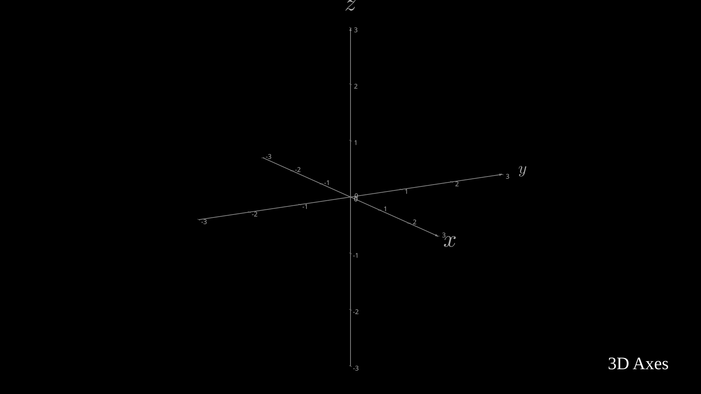
Labeled 3D axes with a title.
"""Manim equivalent: FixedInFrameMObjectTest -- labeled 3D axes."""
from vectormation.objects import *
canvas = VectorMathAnim()
canvas.set_background()
axes = ThreeDAxes()
title = Text('3D Axes', font_size=48, fill='#fff', stroke_width=0)
title.to_corner('UL')
canvas.add_objects(axes, title)
canvas.show()
class FixedInFrameMObjectTest(ThreeDScene):
def construct(self):
axes = ThreeDAxes()
self.set_camera_orientation(phi=75 * DEGREES, theta=-45 * DEGREES)
text3d = Text("This is a 3D text")
self.add_fixed_in_frame_mobjects(text3d)
text3d.to_corner(UL)
self.add(axes)
Example: ThreeDSurfacePlot
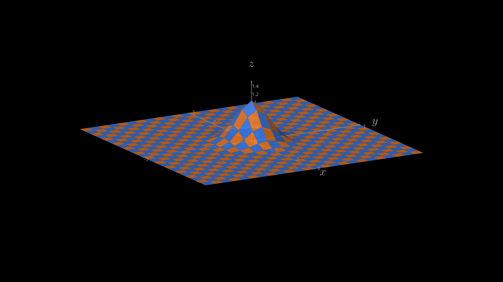
A Gaussian surface with checkerboard colours on 3D axes.
"""Manim equivalent: ThreeDSurfacePlot -- Gaussian surface on 3D axes."""
from vectormation.objects import *
import math
canvas = VectorMathAnim()
canvas.set_background()
axes = ThreeDAxes(x_range=(-3, 3), y_range=(-3, 3), z_range=(0, 1.5))
sigma = 0.4
def gaussian(x, y):
d2 = x * x + y * y
return math.exp(-d2 / (2.0 * sigma * sigma))
axes.plot_surface(gaussian, resolution=(24, 24),
checkerboard_colors=('#FF862F', '#4488ff'),
stroke_color='#225588', stroke_width=0.3,
fill_opacity=0.85)
canvas.add_objects(axes)
canvas.show()
class ThreeDSurfacePlot(ThreeDScene):
def construct(self):
resolution_fa = 24
self.set_camera_orientation(phi=75 * DEGREES, theta=-30 * DEGREES)
def param_gauss(u, v):
x, y = u, v
sigma, mu = 0.4, [0.0, 0.0]
d = np.sqrt((x - mu[0])**2 + (y - mu[1])**2)
z = np.exp(-(d**2 / (2.0 * sigma**2)))
return np.array([x, y, z])
gauss_plane = Surface(param_gauss,
resolution=(resolution_fa, resolution_fa),
v_range=[-2, +2], u_range=[-2, +2])
gauss_plane.scale(2, about_point=ORIGIN)
gauss_plane.set_style(fill_opacity=1, stroke_color=GREEN)
gauss_plane.set_fill_by_checkerboard(ORANGE, BLUE, opacity=0.5)
axes = ThreeDAxes()
self.add(axes, gauss_plane)
Example: ThreeDLightSourcePosition
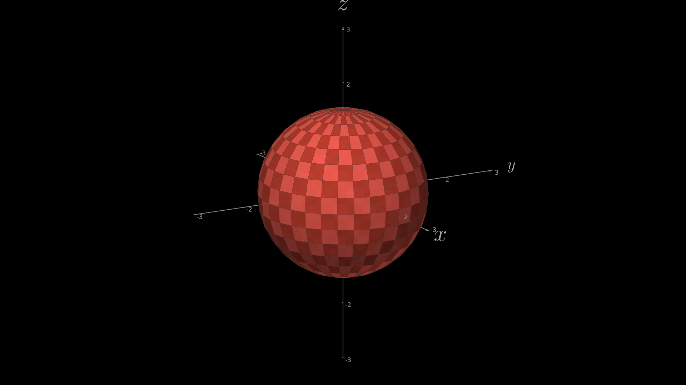
A sphere with Lambertian shading and checkerboard colours on 3D axes.
"""Manim equivalent: ThreeDLightSourcePosition -- sphere on 3D axes."""
from vectormation.objects import *
canvas = VectorMathAnim()
canvas.set_background()
axes = ThreeDAxes(x_range=(-3, 3), y_range=(-3, 3), z_range=(-2, 2))
sphere = Sphere3D(radius=1.5, fill_color='#FC6255',
checkerboard_colors=('#FC6255', '#c44030'),
resolution=(16, 32), fill_opacity=0.9)
axes.add_surface(sphere)
canvas.add_objects(axes)
canvas.show()
class ThreeDLightSourcePosition(ThreeDScene):
def construct(self):
axes = ThreeDAxes()
sphere = Surface(
lambda u, v: np.array([
1.5 * np.cos(u) * np.cos(v),
1.5 * np.cos(u) * np.sin(v),
1.5 * np.sin(u)
]), v_range=[0, TAU], u_range=[-PI / 2, PI / 2],
checkerboard_colors=[RED_D, RED_E], resolution=(15, 32))
self.renderer.camera.light_source.move_to(3 * IN)
self.set_camera_orientation(phi=75 * DEGREES, theta=30 * DEGREES)
self.add(axes, sphere)
Example: ThreeDCameraRotation
A saddle surface with the camera rotating 360 degrees.
"""Demonstrate 3D camera rotation animation."""
from vectormation.objects import *
import math
canvas = VectorMathAnim()
canvas.set_background()
axes = ThreeDAxes(x_range=(-3, 3), y_range=(-3, 3), z_range=(-2, 2))
# Add a filled surface
def saddle(x, y):
return (x**2 - y**2) / 6
axes.plot_surface(saddle, resolution=(20, 20),
fill_color='#58C4DD', fill_opacity=0.8)
# Rotate camera 360 degrees over 6 seconds
axes.set_camera_orientation(0, 6, theta=axes.theta.at_time(0) + math.tau)
canvas.add_objects(axes)
canvas.show(end=6)
class ThreeDCameraRotation(ThreeDScene):
def construct(self):
axes = ThreeDAxes()
self.set_camera_orientation(phi=75 * DEGREES, theta=30 * DEGREES)
self.add(axes)
self.begin_ambient_camera_rotation(rate=0.1)
self.wait(6)
Example: ParametricCurve3DExample
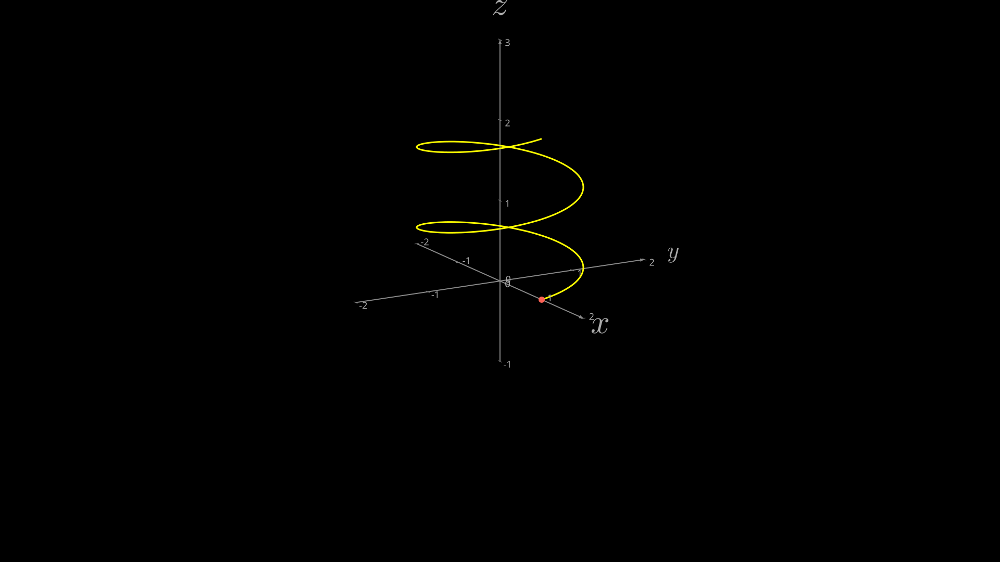
A helix drawn as a parametric curve in 3D space.
"""Demonstrate ParametricCurve3D with a helix."""
from vectormation.objects import *
import math
canvas = VectorMathAnim()
canvas.set_background()
axes = ThreeDAxes(x_range=(-2, 2), y_range=(-2, 2), z_range=(-1, 2.5))
# A helix wrapping around the z-axis
def helix(t):
return (math.cos(t), math.sin(t), t / (2 * math.pi))
curve = ParametricCurve3D(helix, t_range=(0, 4 * math.pi), num_points=200,
stroke='#FFFF00', stroke_width=3)
axes.add_3d(curve)
# A dot at the start
axes.add_3d(Dot3D((1, 0, 0), radius=6, fill='#FC6255'))
canvas.add_objects(axes)
canvas.show()
class ParametricCurve3DExample(ThreeDScene):
def construct(self):
axes = ThreeDAxes()
self.set_camera_orientation(phi=75 * DEGREES, theta=-45 * DEGREES)
curve = ParametricFunction(
lambda t: np.array([np.cos(t), np.sin(t), t / (2 * PI)]),
t_range=[0, 4 * PI], color=YELLOW
)
dot = Dot3D(axes.c2p(1, 0, 0), color=RED)
self.add(axes, curve, dot)
Example: FollowingGraphCamera
Camera zooms in and follows a dot sliding along a sine curve.
"""Manim equivalent: FollowingGraphCamera -- camera follows a dot along a graph."""
from vectormation.objects import *
import math
canvas = VectorMathAnim()
canvas.set_background()
ax = Axes(x_range=(-1, 10), y_range=(-1, 10))
func = lambda x: math.sin(x)
ax.plot(func, stroke='#58C4DD')
# Dot moves along the sine curve from x=0 to x=3*pi over [0.5, 2.0]
dot = Dot(cx=ax.coords_to_point(0, 0)[0], cy=ax.coords_to_point(0, 0)[1], fill='#FF8C00')
x_coor = lambda t: min(max((t - 0.5) / 1.5, 0), 1) * 3 * math.pi
dot.c.set_onward(0, lambda t: ax.coords_to_point(x_coor(t), func(x_coor(t)), t))
# Camera: zoom in, follow the dot, then zoom out
canvas.camera_zoom(2, start=0, end=0.5, cx=dot.c.at_time(0)[0], cy=dot.c.at_time(0)[1])
canvas.camera_follow(dot, start=0.5, end=2.0)
canvas.camera_reset(start=2.0, end=2.5)
canvas.add_objects(ax, dot)
canvas.show()
class FollowingGraphCamera(MovingCameraScene):
def construct(self):
self.camera.frame.save_state()
ax = Axes(x_range=[-1, 10], y_range=[-1, 10])
graph = ax.plot(lambda x: np.sin(x), color=BLUE,
x_range=[0, 3 * PI])
dot = Dot(ax.i2gp(0, graph), color=ORANGE)
self.add(ax, graph, dot)
self.play(self.camera.frame.animate.scale(0.5).move_to(dot))
def update_camera(mob):
mob.move_to(dot.get_center())
self.camera.frame.add_updater(update_camera)
self.play(MoveAlongPath(dot, graph, rate_func=linear),
run_time=8)
self.camera.frame.remove_updater(update_camera)
self.play(Restore(self.camera.frame))
Summary¶
VectorMation recreates all 25 Manim example gallery scenes.
VectorMation replaces Manim’s imperative self.play() pattern with a declarative, time-based approach. Animations are defined by their time interval and the library can render any frame instantly. This makes iteration faster (browser hot-reload) and code shorter (no ceremony of classes and play calls).